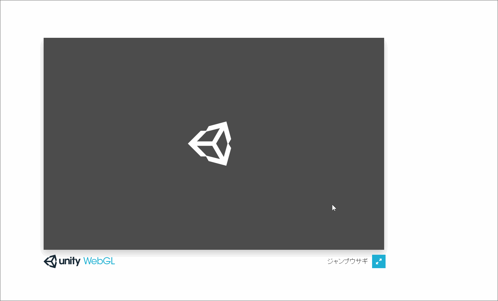
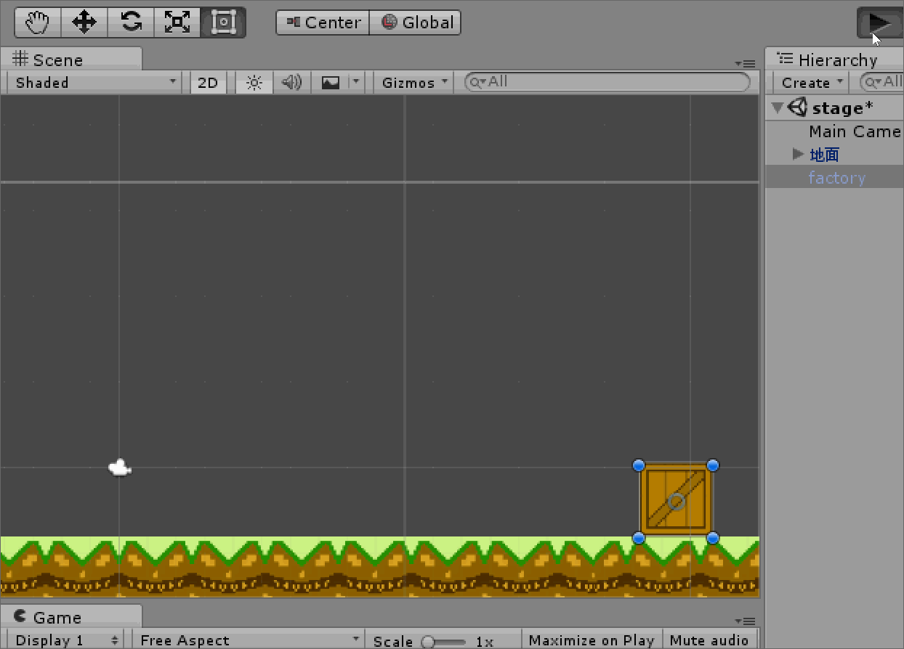
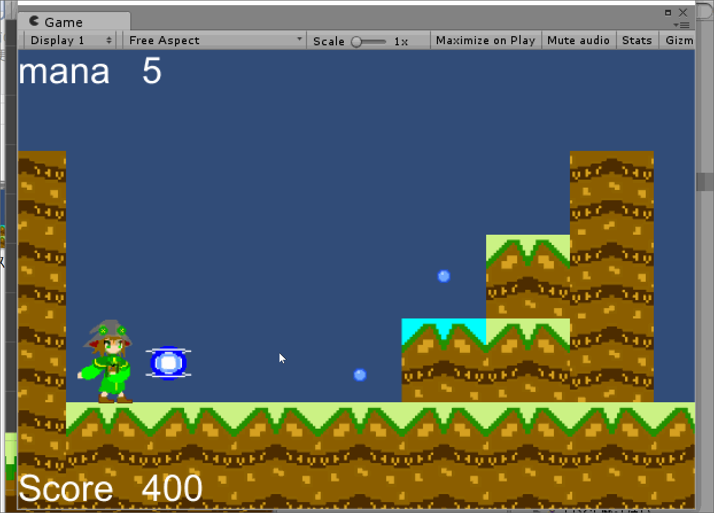

ここどこ？
- ゲーム制作中/デバッグ中に遭遇したいい感じのGIFを置いておく場所です。
- うりあほーむに帰る

- ロケットジャンプ
- webGL上でのジャンプうさぎちゃれんじでのみ起きる裏技
- ゲームを読み込んでる最中にspaceキーを連打することで開始と同時に信じられないほど高く飛ぶ
- 実用性はないけど誰にでもできるのでぜひぜひ

- スポーンブロック
- ゴーストサモナーを制作の初日のGIF君
- とりあえずポコポコ召喚するようにしてみたけど無限に見てられるくらい面白かった
- 木箱から生まれるのもなんかいい

- スリヌケチャージ
- キノコの森でチャージショット実装時に起きた壁すり抜けバグ
- 巨大化＆増殖し続けるチャージショットがプレイヤーを無理やり画面外に押し出してる
- 今はもう発生しないようになっている...?
- レッドヒットポイント
- ゴーストサモナー制作時に一番悩んだかもしれないやつsceneの移動をするとそのあとHPゲージが常に赤く見える現象
- HPゲージのやり方を変えて今の状態になっている
- 作り途中なので画面が古いのがなんかいい感じ